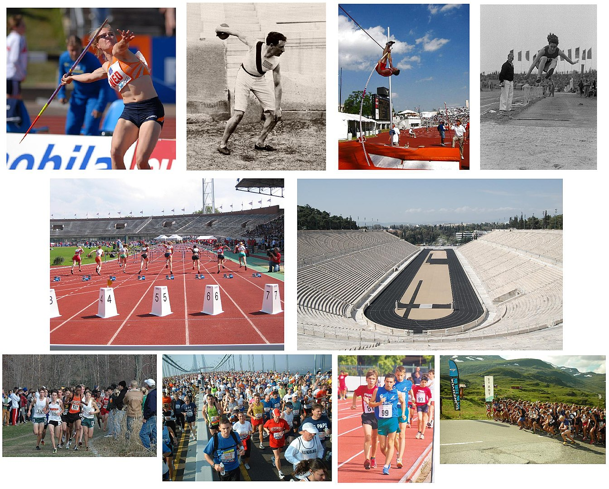

Тема о кошарци.
Кошарка је врста тимског спорта. Игра се лоптом помоћу руку. Две екипе састављене од пет играча покушавају постићи што више поена убацивањем лопте кроз обруч противничког коша по одређеним правилима. Победник је екипа која постигне више поена. Током времена кошарка је развила уобичајене технике шутирања, додавања и вођења лопте, као и позиције играча и нападачки и одбрамбени механизам. Док се уобичајена такмичарска кошарка одвија под строгим и тачно одређеним правилима, разне варијације кошарке учиниле су кошарку ближу играчима и с мањим бројем правила. Кошарка је један од најгледанијих спортова на свету. Док је такмичарска кошарка искључиво дворански спорт који се одвија на терену за кошарку, мање регулисане врсте кошарке могу се играти и као спољни спорт на подлогама различитим од паркета, који је стандард за такмичарску кошарку.
Посети страницу о кошарци  Отвори пдф документ о атлетици